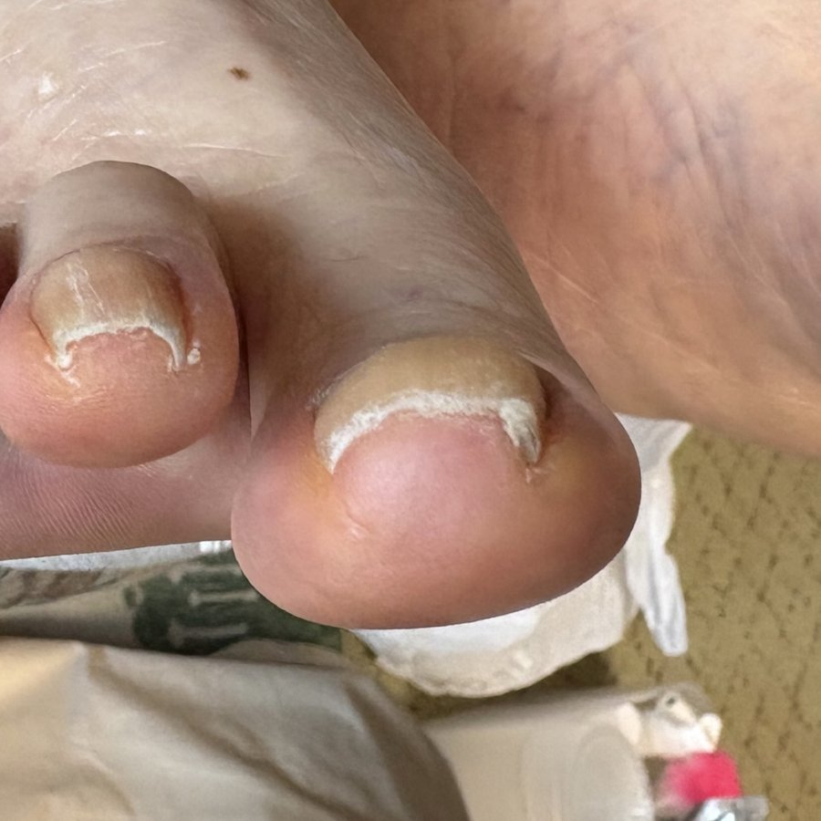
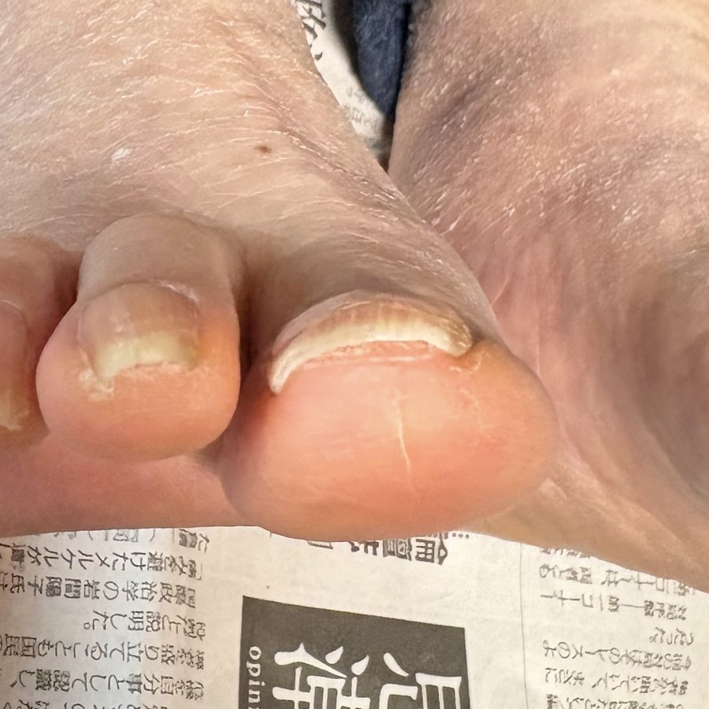
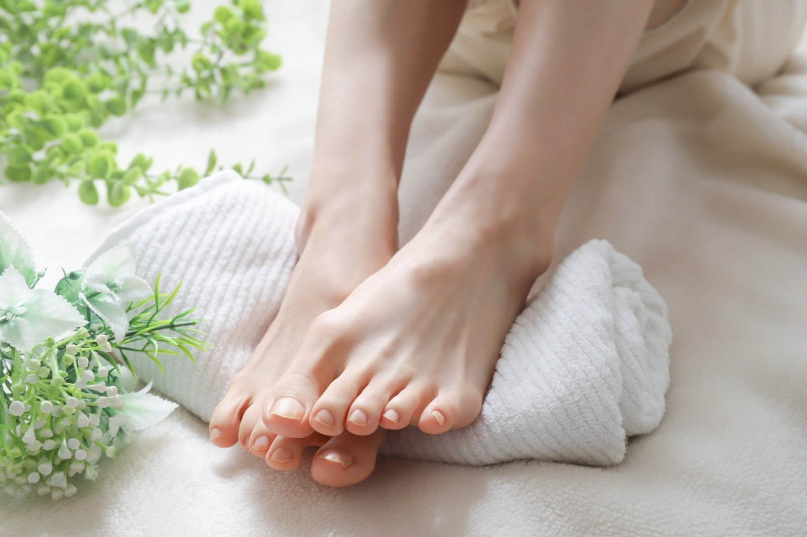
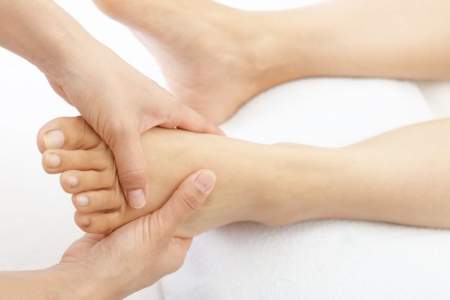
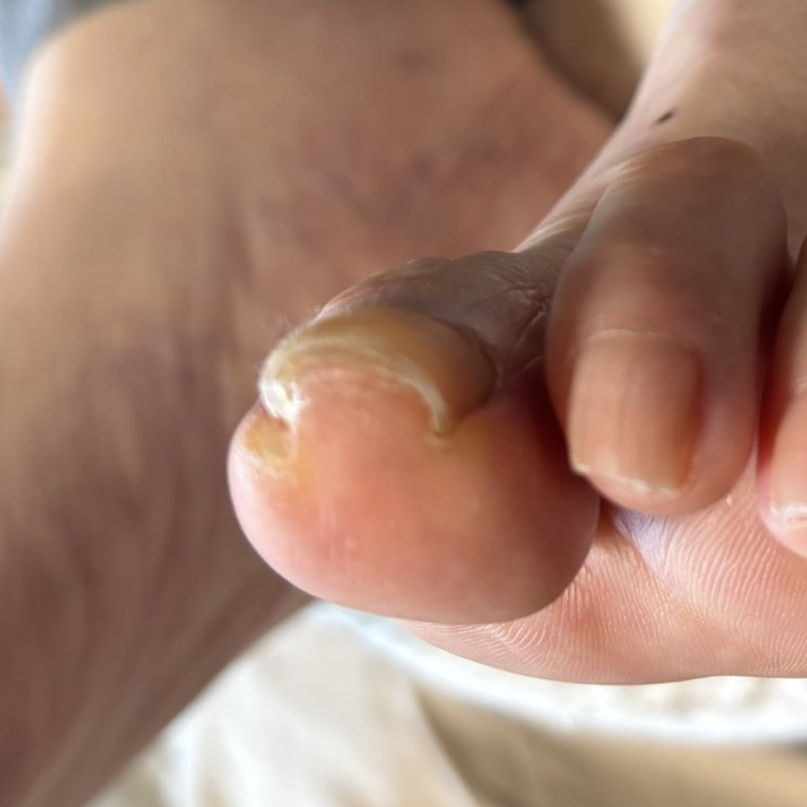
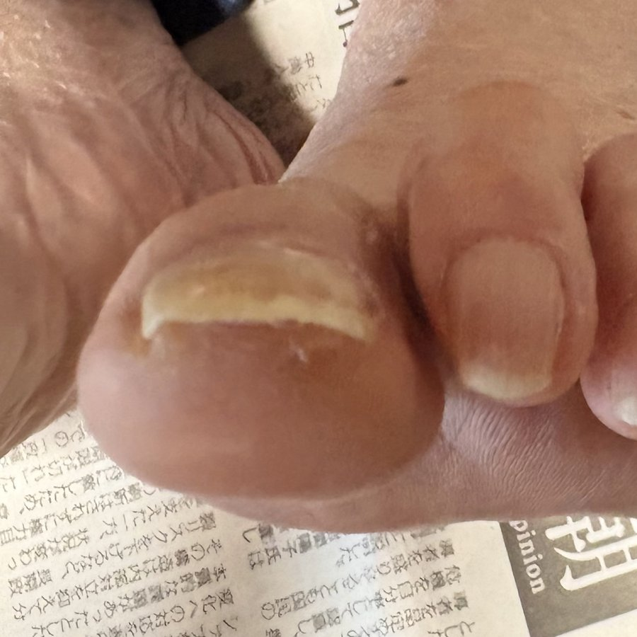
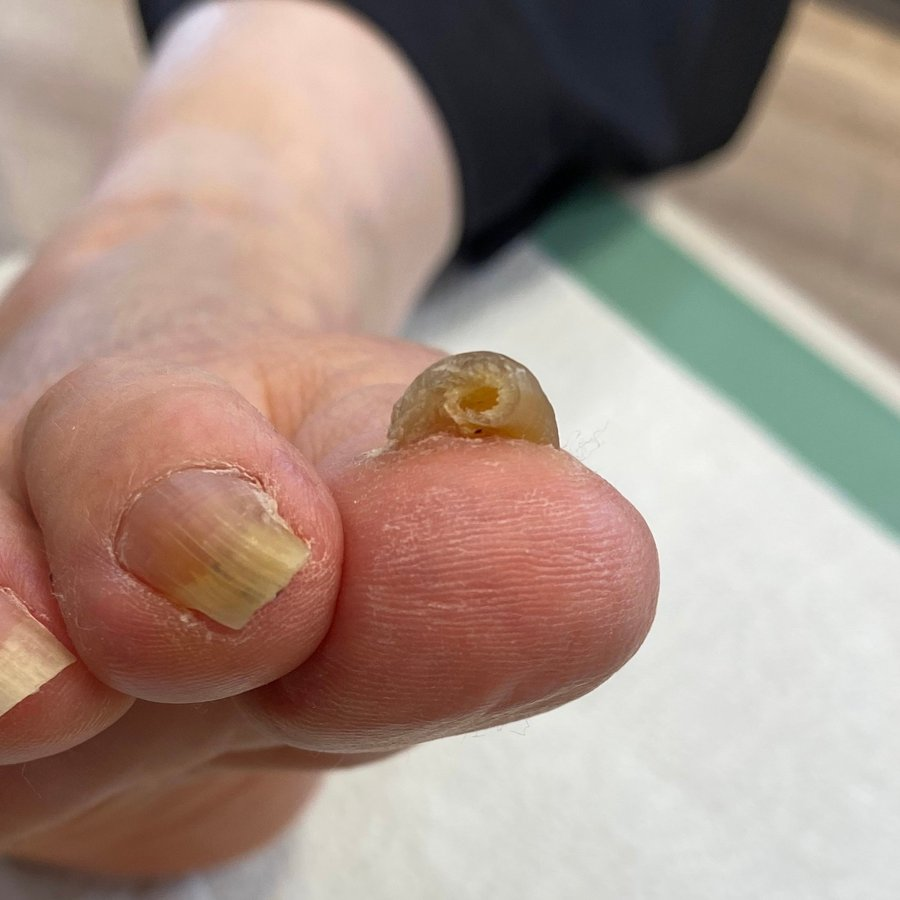
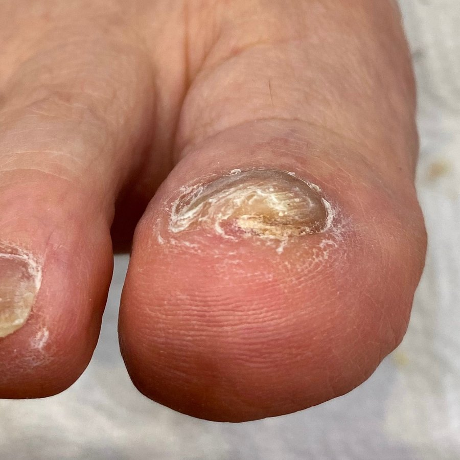
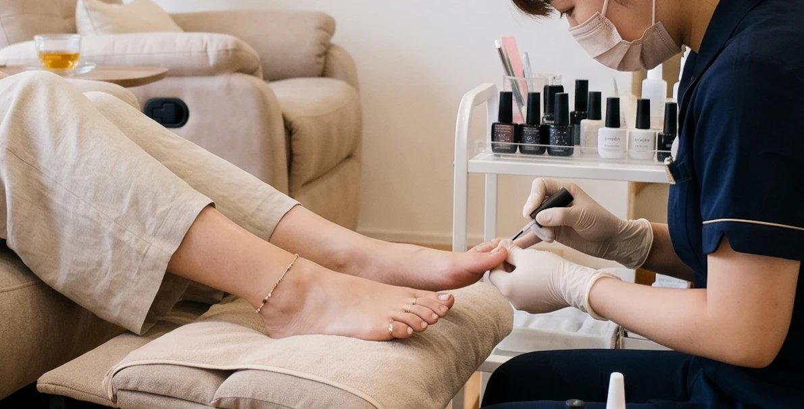

「病院に行くほどじゃない。でも、ときどき気になる」——
そんな方へ。切らない・痛みの少ないケアという、もうひとつの選択肢があります。

Beforeケア写真
Afterケア写真※写真はケア例です。変化・効果、痛みの感じ方には個人差があります。
ひとつでも当てはまったら、それは「軽いうちに整えるサイン」かもしれません。

靴を履くと、ときどき指の端が気になる
病院に行くほどじゃない気がして、つい後回しにしている
「切る」「手術」と聞くと、やっぱり不安
市販のセルフケアが、続かない・合うものが分からない
気にならない日もあるから、なんとなくそのままにしている
サンダルや素足になるのが、少し気になる
その「なんとなく」を、ここで見直してみませんか。
気になる状態を長くそのままにしておくと、整えるのに時間がかかることもあります。軽いうちなら、通う回数も負担も少なくすみやすいもの。「気になった今」が、はじめどきです。
通う回数 少なめ
負担も おさえやすい
通う回数 やや増える
期間も 長めに
通う回数 多くなりやすい
まず 医療機関へ
巻き爪との向き合い方は、ひとつではありません。それぞれの違いを知って、自分に合う方法を選びましょう。
医師が診察し、症状に応じてテーピングや、重い場合は手術などの医療を行います。健康保険が使える場合があります。
市販のグッズなどで、ご自身でケアする方法です。手軽な一方で、続けにくかったり、合うものを選びにくいこともあります。
専用の器具で、爪に大きな負担をかけず少しずつ形を整えていく方法です。切る処置は行わず、施術中の痛みも少なめ。まず気軽に始めたい方へ。
専用の矯正器具を使い、爪に大きな負担をかけずに、少しずつ整えていきます。切る処置は行いません。「切るのは不安」という方の、はじめやすい選択肢です。
炎症・化膿・強い痛みがある場合や、症状が重い場合は、まず医療機関（皮膚科・形成外科など）の受診をおすすめします。当サロンは、切らないケアを行う場所です。医療行為は行いません。
一度で終わりではありません。けれど、それは無理に変えるのではなく、自然に整えていくということ。

まずは状態を確認。LINEで写真を送っての事前相談もできます。
切らずに装着。痛みもほとんどなく、その日のうちに始められます。
数週間ごとに通い、爪の形を少しずつ整えていきます。
無理なく、自然に。整った状態を保つためのケアもサポートします。
通う目安：状態によって異なりますが、軽い方ほど少ない回数・短い期間ですみやすい傾向です。
※変化や期間には個人差があります。まずは今の状態をご相談ください。
これまでに数多くの方のケアをしてきました。あなたと同じくらいの段階の方も、たくさんいらっしゃいます。
軽度のケア例

Beforeケア写真
Afterケア写真軽度のケア例

Beforeケア写真
Afterケア写真重度のケア例
※掲載写真はご本人の同意を得たケア例です。変化・効果には個人差があり、結果を保証するものではありません。
手術はどうしても不安で、ずっとそのままにしていました。ここは切らないと聞いて来店。来てよかったです。
駅から近くて、仕事帰りにも寄りやすいので続けられました。スタッフの方の対応も丁寧でした。
「まだ軽いけれど見てもらえますか?」という相談にも、ていねいに対応してもらえて安心でした。
※お客様個人の感想です。効果・変化には個人差があり、内容を保証するものではありません。

爪を切る処置はせず、施術中の痛みも少なめ。「切るのは不安」という方も、はじめやすい方法です。
軽度から幅広い状態に対応。お一人おひとりの状態に合わせてご提案します。
路面店で、お仕事帰りにも。ご予約・ご相談はLINEで完結します。
路面店で運営し、続けやすい料金を心がけています。料金は事前にお伝えします。
| 当サロン （切らない矯正ケア） | 病院 （皮膚科・形成外科） | 他の民間サロン | |
|---|---|---|---|
| 主な方法 | 専用器具で少しずつ整える | テーピング・ワイヤー・プレート、重症はフェノール法などの手術 | プレートやワイヤーによる矯正 |
| 爪を切る・手術 | 行わない | 症状により手術を行う場合がある | 行わないことが多い |
| 施術中の痛み | 少なめ（切らないため） | 手術の場合は麻酔を使用 | 方法により異なる |
| 医師の診察 | 不要（サロンケア） | 必要（医療として実施） | 不要 |
| 費用の目安 | ¥〇,〇〇〇〜（自費） | 手術は保険適用で1部位5,000円程度〜／自費の矯正は別途 | 自費・1本あたり概ね5,500〜8,800円程度〜 |
| 通いやすさ | 吉祥寺駅北口 徒歩5分・夜20時まで・土日祝も営業 | 診療時間内・予約制 | 店舗により異なる |
| 予約・相談 | LINEで予約・相談OK | 電話・WEB予約 | 店舗により異なる |
※2026年6月時点で、公開情報をもとに当サロンが一般的な傾向をまとめたものです。治療・施術の内容や費用は、各医療機関・各店舗・症状により異なります。健康保険の適用可否は医療上の判断によります。最新・正確な情報は各院に直接ご確認ください。
炎症や強い痛み・重い症状がある場合は、まず病院へ。「軽度〜中等度で、できれば切らずに整えたい」という方には、サロンという選択肢があります。
追加で高額なご提案をすることはありません。料金はすべて事前にお伝えします。
軽いうちなら、少ない回数で。結果的に、負担も少なく。
通って整えるからこそ、通いやすさが大切。北口から徒歩5分の路面店です。
切らない方法のため、施術中の痛みはほとんどなく、装着もほとんど痛みを感じずに行えます。感じ方には個人差がありますので、不安な方はまず状態をご相談ください。
状態によって異なります。軽い方ほど少ない回数ですみやすい傾向です。カウンセリングで目安をお伝えします。※個人差があります。
爪の切り方や歩き方などによって、再びくい込みやすくなることもあります。整った状態を保つためのケア方法もお伝えしています。
はい。むしろ軽いうちのほうが、少ない回数・負担で整えやすい傾向です。「これくらいで行っていいのかな」という段階こそ、ご相談ください。
そうした場合は、まず医療機関（皮膚科・形成外科など）の受診をおすすめします。当サロンは切らないケアを行う場所で、医療行為は行いません。
ご予約をおすすめしています。LINEから空き状況の確認・ご予約・ご相談ができます。写真を送っての事前相談も可能です。
「これってケアできる?」「何回くらい必要?」——気になることを、まずLINEで気軽にご相談ください。無料で、いまの状態を確認します。
LINEで相談・予約する友だち追加だけでもOK。しつこい連絡はいたしません。